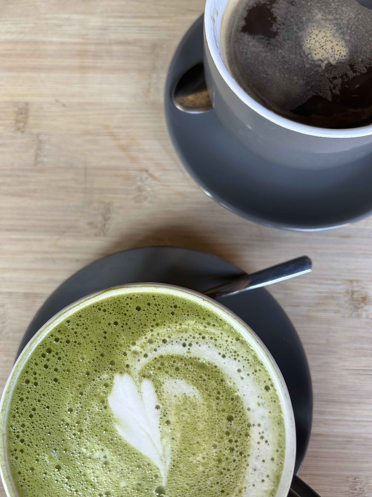
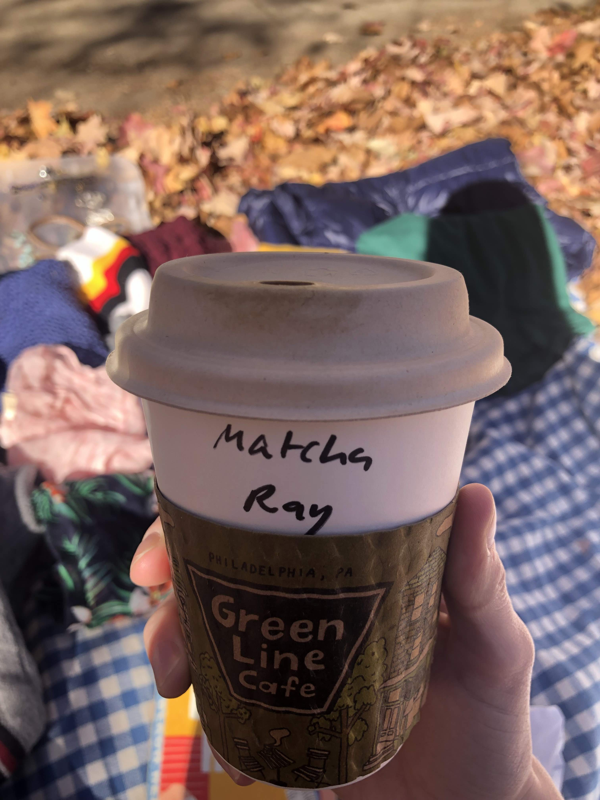
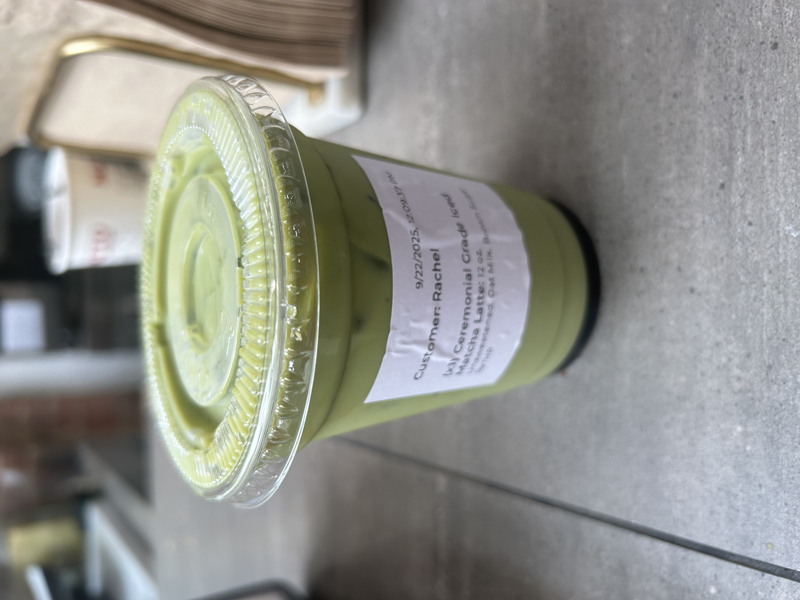
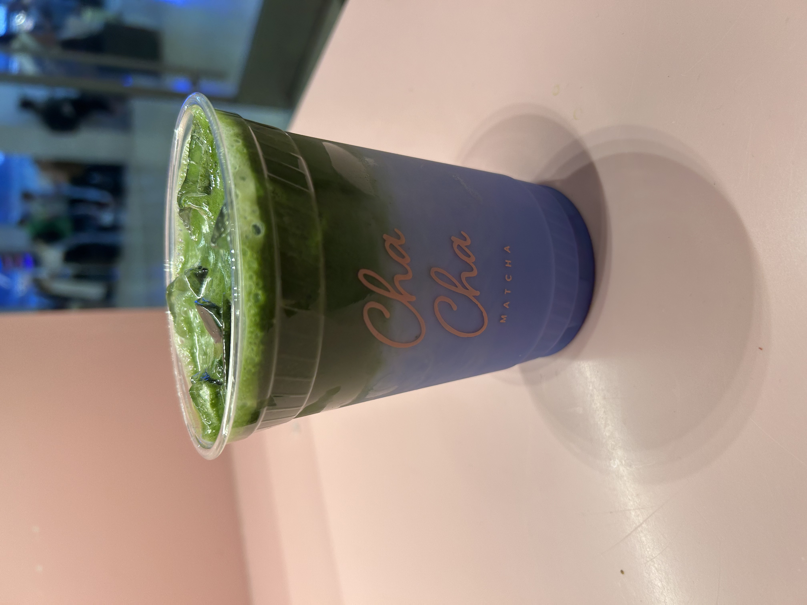

Matcha is one of the oldest forms of tea, but it has exploded in popularity in the United States in the past few years. Grown in the shade and prepared under very specific conditions, matcha is a very bright green, and is used as a powder. Using a whisk and bowl, matcha powder is incorporated into water to create the tea beverage, a very different process than teas that are made through the steeping of leaves that are later removed.

Going for coffee always means a cup of some sort of tea for me!
Below I have detailed some of my recent matcha beverages and scored them against each other. As always, my favorite drinks tend to be the ones I prepare myself, but I love trying new places when I have the chance.
Matcha Rankings
Cafe
Notes
Score
Cha Cha Matcha
Hot matcha without any sweetner. Enjoyable to drink, but overpriced.
3.5/5
Culture 307
Very strong matcha flavor, a little too bitter. Very small portion. Reasonably priced.
4/5

Green Line Cafe
Absolutely delicious! (Unfortunately in Phildelphia.) Very good matcha flavor with some sweetner.
4.5/5

Matto Espresso
Cheap, reliable, and not too sweet.
4/5

Cha Cha Matcha
Trying something new is not always a good idea! Good matcha flavor, bad "blue drink."
2/5
The Oat Milk Matcha Latte
Information provided from my own knowledge and purchase history.